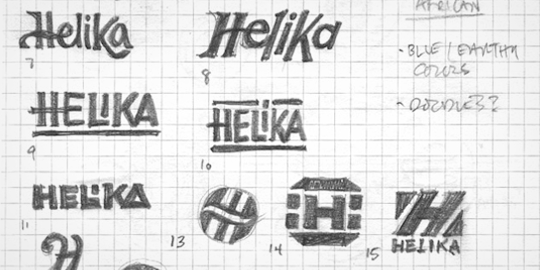
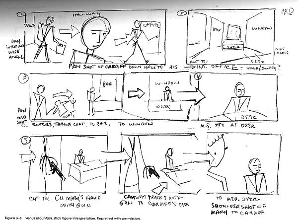

Visualiseringsværktøjer
Der findes mange forskellige visualiseringsværktøjer, som kan hjælpe med at gøre ens arbejde nemmere ved at man først visualiserer det man skal lave, før man rigtig begynder på det.
Rough Sketching
En vigtig kunnen er at kunne skitsere eksempler hurtigt og simpelt, hvis man f.eks. er i en samtale med en klient der gerne vil have et logo. De kan have op til flere ideer, du kan have op til flere ideer, og hvis man hurtigt kan skitsere nogle eksempler på papir med det samme, vil man hurtigere kunne komme i gang med at arbejde på det endelige produkt.

Storyboarding
Storyboarding bliver brugt til når man skal lave et videoprodukt, såsom en kort reklamefilm, til fjernsyn, på egen hjemmeside etc. Storyboarding er vigtigt at kunne gøre fordi man vil nemmere kunne skabe overblik over hvilke scener der skal filmes. Ikke nødvendigvis i hvilken rækkefælge de skal filmes i, fordi nogle scener vil være nemmere at filme back-to-back, i stedet for andre. Det kan være at to scener foregår det samme sted, men der er en scene mellem dem, der foregår et andet sted. Man behøver ikke at være den bedste kunstner i verden for at kunne lave storyboards, selvom det godt kan hjælpe, selv stickmænd kan bruges til storyboarding til scener med mennesker i. Det vigtigste er at man får vist hvad der skal ske, ikke nødvendigvis hvordan det skal se ud.
